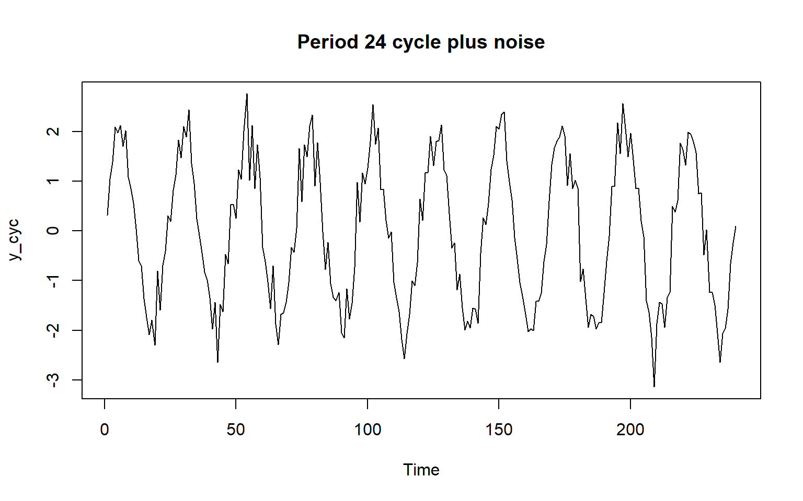
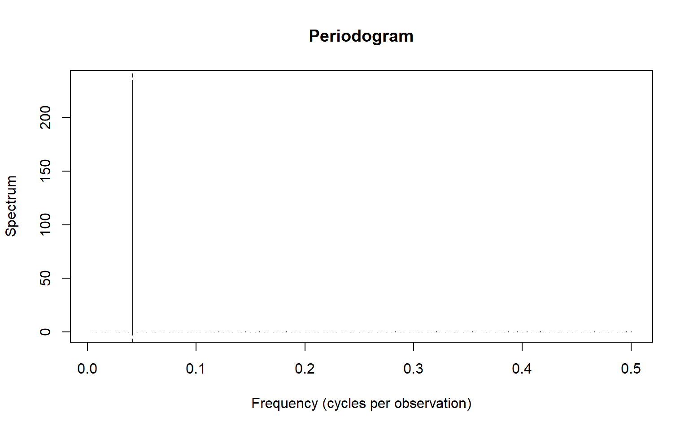
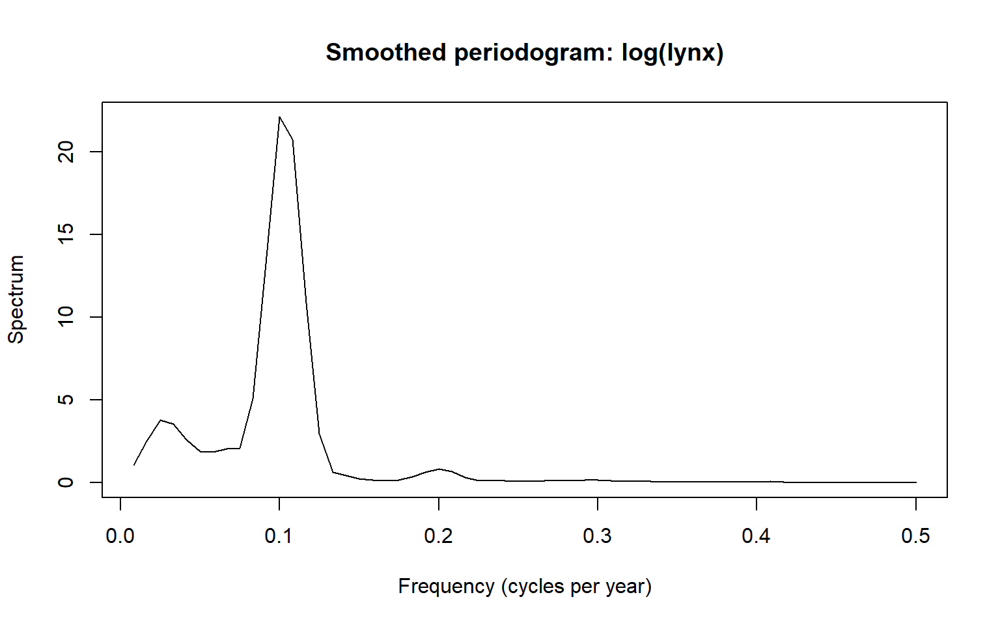
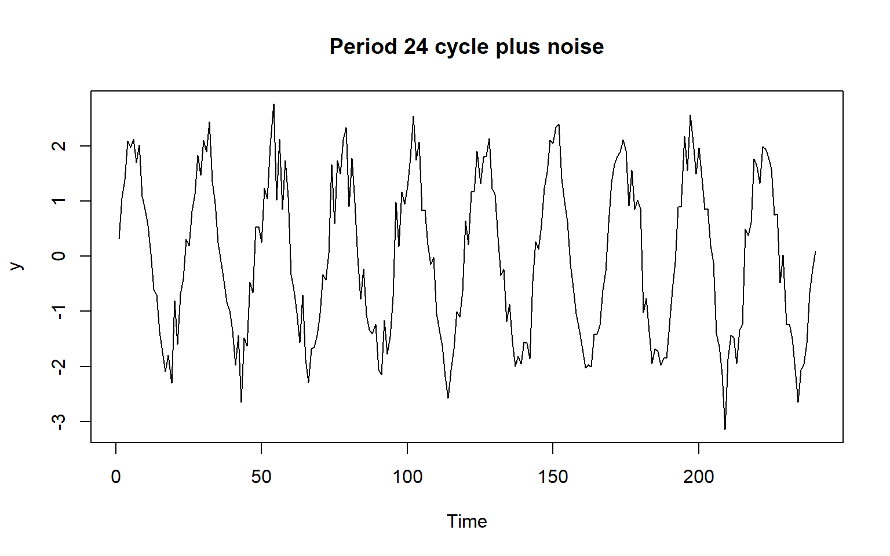
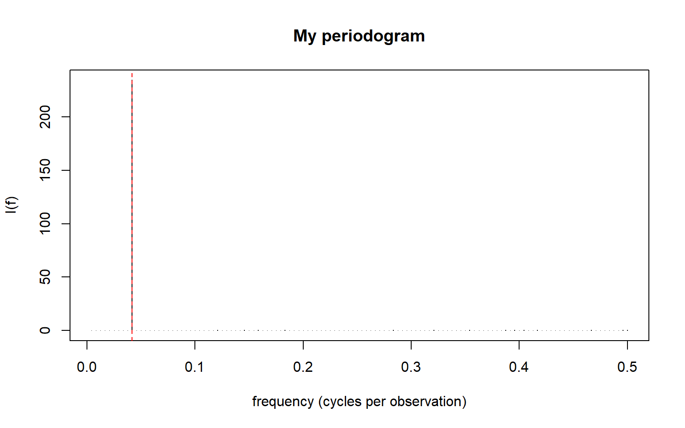
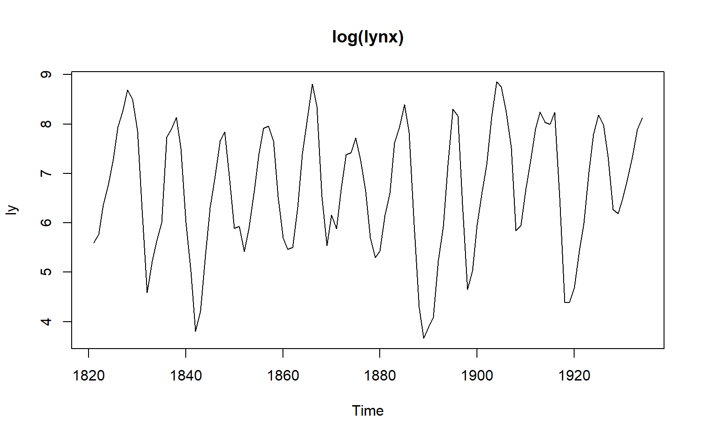
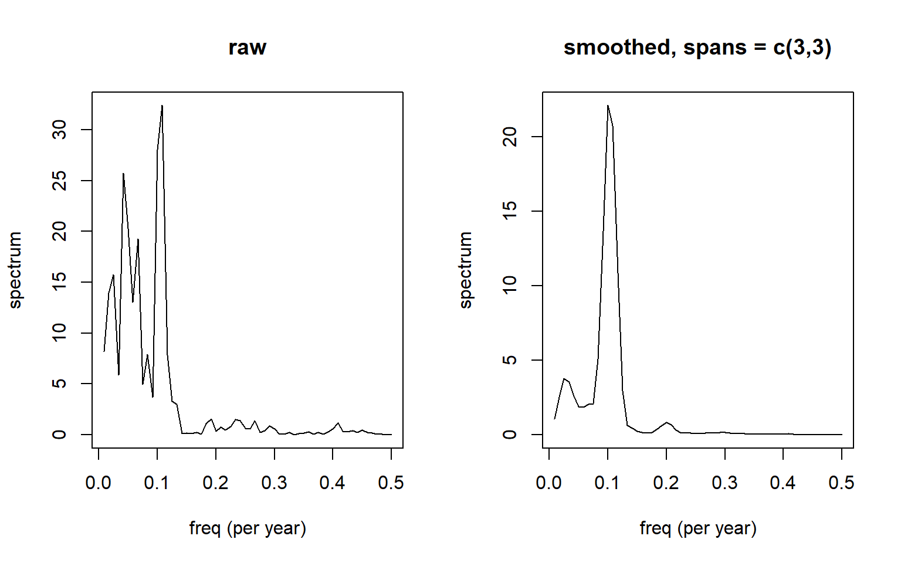
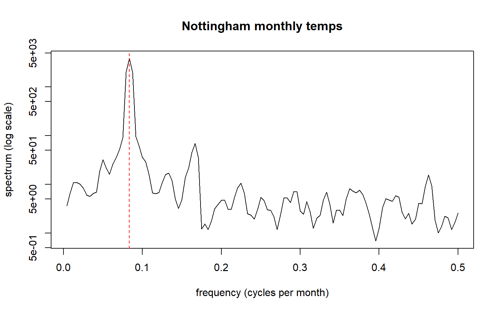
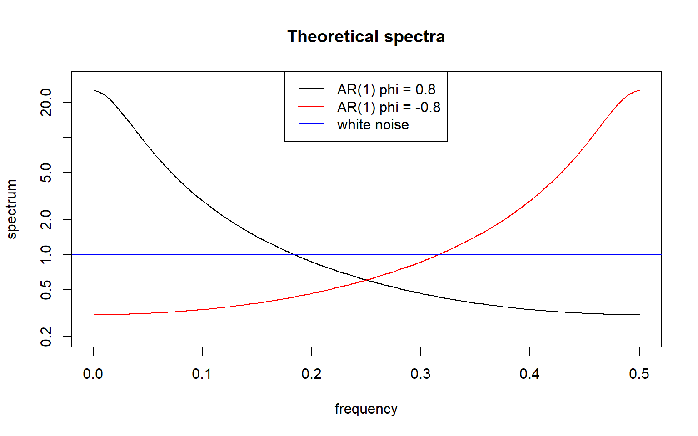
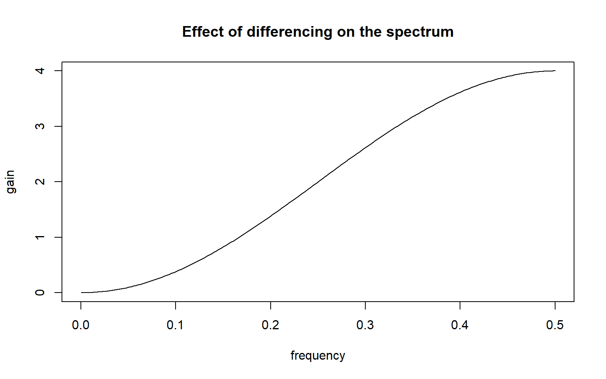

Code
set.seed(100)
y_cyc <- 2 * sin(2 * pi * (1:240) / 24) + rnorm(240, 0, 0.4)
plot.ts(y_cyc, main = "Period 24 cycle plus noise")
This section covers Part 1 - Spectral Analysis. The main concepts are as follows,
ts(..., frequency = 12) in R means the period (12 observations per year), not \(f\).spans) and keep only what survives.I used the Spectral analysis lab and simplified it easier for me to understand.
We simulate a sine wave with period 24, then add noise.
set.seed(100)
y_cyc <- 2 * sin(2 * pi * (1:240) / 24) + rnorm(240, 0, 0.4)
plot.ts(y_cyc, main = "Period 24 cycle plus noise")
I expect the peak at a frequency of \(1/24 = 0.0417\) cycles per observation, which is a period of 24 observations.
sp_cyc <- spec.pgram(y_cyc, taper = 0, detrend = FALSE, fast = FALSE, plot = FALSE)
plot(sp_cyc$freq, sp_cyc$spec, type = "h",
xlab = "Frequency (cycles per observation)", ylab = "Spectrum",
main = "Periodogram")
abline(v = 1 / 24, lty = 2)
peak_cyc <- sp_cyc$freq[which.max(sp_cyc$spec)]
c(peak_frequency = peak_cyc, peak_period = 1 / peak_cyc)peak_frequency peak_period
0.04166667 24.00000000 The lynx series is very skewed, so we take logs and smooth the periodogram.
ly <- log(lynx)
sp_ly <- spec.pgram(as.numeric(ly), spans = c(3, 3), plot = FALSE)
plot(sp_ly$freq, sp_ly$spec, type = "l",
xlab = "Frequency (cycles per year)", ylab = "Spectrum",
main = "Smoothed periodogram: log(lynx)")
peak_ly <- sp_ly$freq[which.max(sp_ly$spec)]
c(peak_frequency = peak_ly, period_years = 1 / peak_ly)peak_frequency period_years
0.1 10.0 Fisher’s g test asks whether the largest peak is bigger than white noise would produce. Here we apply it to the period-24 series.
n <- length(y_cyc)
I <- Mod(fft(y_cyc - mean(y_cyc)))^2 / n
q <- floor((n - 1) / 2)
I <- I[2:(q + 1)]
g <- max(I) / sum(I)
p_value <- min(q * (1 - g)^(q - 1), 1)
c(g = g, p_value = p_value) g p_value
9.370008e-01 2.495038e-140 Here \(g\) is the largest ordinate as a share of the total, and the p-value is small when that share is too large for white noise.
The period-24 peak sits at \(f = 0.0417 = 1/24\), so the period is 24 observations, as built into the simulation. Fisher’s test gives \(g = 0.937\) with \(p = 2.5 \times 10^{-140}\) across \(q = 119\) ordinates, so white noise is rejected. The smoothed lynx spectrum peaks at \(f = 0.1\) cycles per year, a period of 10 years.
In this worked example I take a series with a known cycle and a real dataset (the lynx series), and shows step by step how to find the peak in the periodogram, convert it to a period, and test whether it is real.
set.seed(100)
n <- 240
t <- 1:n
y <- 2 * sin(2 * pi * t / 24) + rnorm(n, 0, 0.4)
plot.ts(y, main = "Period 24 cycle plus noise")
my_pgram <- function(y) {
n <- length(y)
y <- y - mean(y)
I <- Mod(fft(y))^2 / n
j <- 1:floor(n / 2)
data.frame(freq = j / n, period = n / j, I = I[j + 1])
}
pg <- my_pgram(y)
pg[which.max(pg$I), ]| freq | period | I | |
|---|---|---|---|
| 10 | 0.0416667 | 24 | 234.5078 |
plot(pg$freq, pg$I, type = "h", xlab = "frequency (cycles per observation)",
ylab = "I(f)", main = "My periodogram")
abline(v = 1/24, col = "red", lty = 2)
Element \(k+1\) of fft(y) belongs to frequency \(k/n\), which is why the index is j + 1. The peak is at \(f = 0.0417 = 1/24\), so the period is 24 observations.
The same thing with R’s spec.pgram(). Turn off its defaults (taper, detrend, padding) to get the raw periodogram:
sp <- spec.pgram(y, taper = 0, detrend = FALSE, fast = FALSE, plot = FALSE)
sp$freq[which.max(sp$spec)][1] 0.041666671 / sp$freq[which.max(sp$spec)][1] 24\(g\) = largest ordinate / sum of all ordinates. Under H0 (white noise), \(P(G > g) \approx q (1 - g)^{q-1}\), where \(q\) is the number of ordinates. This approximation is fine when the p-value is small.
fisher_g <- function(y) {
y <- y - mean(y)
n <- length(y)
I <- Mod(fft(y))^2 / n
q <- floor((n - 1) / 2)
I <- I[2:(q + 1)]
g <- max(I) / sum(I)
p <- q * (1 - g)^(q - 1)
c(g = g, p_value = min(p, 1), period = n / which.max(I))
}
fisher_g(y) g p_value period
9.370008e-01 2.495038e-140 2.400000e+01 set.seed(2026)
fisher_g(rnorm(240)) # pure noise, so the p-value should be large g p_value period
0.04863759 0.33141605 4.61538462 Annual Canadian lynx trappings, 1821 to 1934. Use logs because the series is very skewed.
ly <- log(lynx)
plot(ly, main = "log(lynx)")
sp_raw <- spec.pgram(as.numeric(ly), taper = 0, detrend = FALSE, plot = FALSE)
sp_smooth <- spec.pgram(as.numeric(ly), spans = c(3, 3), plot = FALSE)
par(mfrow = c(1, 2))
plot(sp_raw$freq, sp_raw$spec, type = "l", main = "raw", xlab = "freq (per year)", ylab = "spectrum")
plot(sp_smooth$freq, sp_smooth$spec, type = "l", main = "smoothed, spans = c(3,3)",
xlab = "freq (per year)", ylab = "spectrum")
par(mfrow = c(1, 1))
peak <- sp_smooth$freq[which.max(sp_smooth$spec)]
c(freq = peak, period_years = 1 / peak) freq period_years
0.1 10.0 fisher_g(as.numeric(ly)) g p_value period
5.967384e-01 1.136230e-20 9.500000e+00 There is a strong cycle of roughly 9 to 10 years, which survives smoothing and is highly significant. It is a cycle, not seasonality: it is caused by the predator-prey relationship, not the calendar.
Smoothing: too little and the spectrum stays noisy; too much and real peaks get flattened. Try a few spans.
sp_t <- spec.pgram(as.numeric(nottem), spans = 3, plot = FALSE)
plot(sp_t$freq, sp_t$spec, type = "l", log = "y", main = "Nottingham monthly temps",
xlab = "frequency (cycles per month)", ylab = "spectrum (log scale)")
abline(v = 1/12, col = "red", lty = 2)
The peak is at \(1/12\) cycles per month = a 12 month cycle.
The AR(1) spectrum is \(f(\omega) = \sigma^2 / (1 - 2\phi\cos(2\pi\omega) + \phi^2)\).
f <- seq(0, 0.5, length.out = 200)
ar1_spec <- function(f, phi) 1 / (1 - 2 * phi * cos(2 * pi * f) + phi^2)
plot(f, ar1_spec(f, 0.8), type = "l", log = "y", ylim = c(0.2, 30),
xlab = "frequency", ylab = "spectrum", main = "Theoretical spectra")
lines(f, ar1_spec(f, -0.8), col = "red")
abline(h = 1, col = "blue")
legend("top", c("AR(1) phi = 0.8", "AR(1) phi = -0.8", "white noise"),
col = c("black", "red", "blue"), lty = 1)
Differencing multiplies the spectrum by \(|1 - e^{-2\pi i f}|^2 = 2 - 2\cos(2\pi f)\), which is 0 at \(f = 0\) and 4 at \(f = 0.5\). So differencing white noise creates high frequency power that wasn’t there before:
plot(f, 2 - 2 * cos(2 * pi * f), type = "l", xlab = "frequency", ylab = "gain",
main = "Effect of differencing on the spectrum")
Sampling once per observation, a cycle at \(f = 0.6\) is indistinguishable from one at \(f = 0.4\): over 20 observations the two sampled series differ by exactly zero. Anything above the Nyquist frequency of \(0.5\) is therefore aliased to a lower frequency.
Period, frequency and angular frequency: The period \(m\) is how many observations make one full cycle. The frequency is \(f = 1/m\), the number of cycles per observation. The angular frequency is \(\omega = 2\pi f\), which is the same cycle measured in radians. In ts(), the frequency argument is actually the period, so ts(x, frequency = 12) means 12 observations per year.
Aliasing: A cycle faster than the Nyquist frequency (\(f = 0.5\), two observations per cycle) cannot be seen properly. It shows up as a slower cycle at the wrong frequency. Monthly data, for example, cannot reveal a weekly cycle. Why smooth the periodogram: The raw periodogram is very noisy, so a single tall peak may be chance. Smoothing averages neighbouring ordinates, which makes genuine peaks easier to see. Too little smoothing leaves noise, and too much flattens real peaks.
Cycle versus seasonality: A cycle, such as the lynx series, has a period that is not tied to the calendar and comes from the system itself. Seasonality, such as monthly temperatures, repeats on a fixed calendar period, such as 12 months. When a periodogram beats the ACF: A periodogram is more useful when you want to know the length of one or more cycles, or when several cycles overlap. The ACF is more useful for forecasting with ARIMA-type models.
This section was so confusing. The Frequency domain just didn’t make sense to me. I could complete the Lab but I didn’t really understand what it was I was actually doing, or rather I didn’t see how it worked or how one would use it for modelling. I also got it a bit confused with harmonics in Time Series Regression ({Chapter 6}) but that is a variable describing the actual data, still in the time domain.
What really helped me to understand it was Peridogram in the following example. If I was to play a chord, three muscial notes on a piano, each one a frequency (a sinusoid). These three combine into one signal which gives us our time series in the time domain. That series is the sum of its parts, and it could be split back into those three sinusoids (the three piano notes), but from just the time domain plot of a seemingly random curve, you can’t see those orginal parts that make it up. The peridogram shows exactly which frequencies make up our time series, and we would be able to determine the exact three notes that make up our chord.
This helped me understand what we are doing in Spectral Analysis. We can determine a combination of sinusoids (or frequencies) that when added together can model our series. We can determine which sinusoids best model our data by idenfifying the frequencies on the Peridogram. The lab only have one frequency which made it harder to realise what was going on, but now that I’ve made the connection it seems as the harmonics in TSRegression.